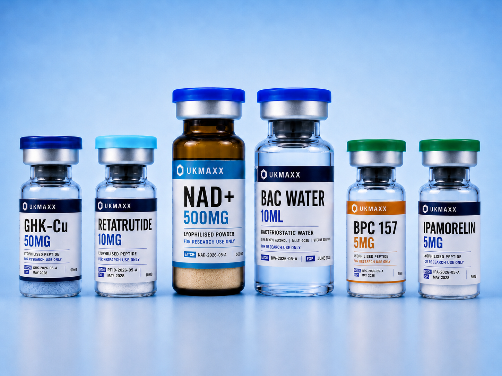

How Pay by Bank works on UKMAXX.
UKMAXX checkout uses Pay by Bank, a secure Open Banking payment flow. You choose your bank, approve the payment in your banking app or online banking, then return to UKMAXX once the order is confirmed.

What happens at checkout?
After entering your delivery details, UKMAXX sends you to a secure Pay by Bank checkout. You select your bank, approve the payment in your banking app or online banking, then return to UKMAXX after the payment result is confirmed.
Why UKMAXX uses Pay by Bank
Pay by Bank keeps checkout simple for UK customers and avoids card entry. UKMAXX never sees or stores your card details or bank login details. Approval happens through your own bank or secure banking flow.
For UKMAXX, it also gives fast payment confirmation so the order system can send confirmation emails, notify dispatch and create the Royal Mail order workflow.
When is the order confirmed?
Your order is confirmed once the bank payment is successfully approved and UKMAXX receives the payment confirmation. If you cancel or reject the payment inside your banking app, the order should not proceed as paid.
After a successful payment, you receive an order confirmation email with your UKMAXX order number and tracking link. Tracking updates after dispatch.
Pay by Bank FAQ
Do I need a card?
No. Pay by Bank does not require entering card details on UKMAXX.
Does UKMAXX see my banking password?
No. UKMAXX does not see or store your bank login details. Approval is handled through your bank or secure banking flow.
What if I cancel the bank approval?
If you cancel or reject the payment, checkout should return as unsuccessful and the order should not be marked as paid.